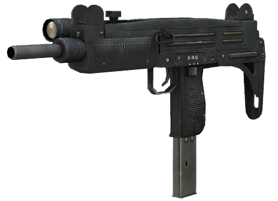

Tier 1 weapons

The Uzi is the weakest of all weapons, however used with a laser sight it can become a very lethal bullet hose. Good at picking commons because of it's run and gun accuracy. Headhunting is the best thing this weapon can do at closer range, even against incoming hordes.
Damage:20
Damage:20